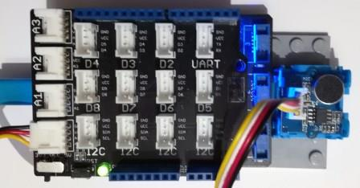

Version: 0.8.0
Grove SoundSensor is connected as followed on Netduino3:

| Grove SoundSensor | Mainboard with base shield |
|---|---|
| Yellow wire | Socket A0 |
using System.Diagnostics;
using System.Threading;
using Bauland.Grove;
using Bauland.Pins;
namespace TestSoundSensor
{
static class Program
{
static void Main()
{
// Grove SoundSensor module is connected on pin A0 of Netduino3 with base shield
SoundSensor soundSensor=new SoundSensor(Netduino3.AdcChannel.A0);
while (true)
{
Debug.WriteLine("Level: "+soundSensor.ReadLevel().ToString("F"));
Thread.Sleep(1000);
}
}
}
}